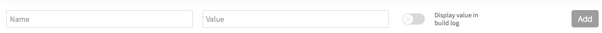

Travis Setting¶
Outline¶
sign in Travis
manage Travis settings

Manage Travis Settings¶
Create a new repository by click
+to choose the repository we pushed before.
After that we need to set this repository by entering into the settings section.
There are a few environmen variables we need to add.

CUSTOM_DOMAIN is optional, GIT_EMAIL is your GitHub email, GIT_NAME is your GitHub name
, GITHUB_TOKEN is the GitHub token we generated before.
Remember to disable the Display value in build log at the bottom
